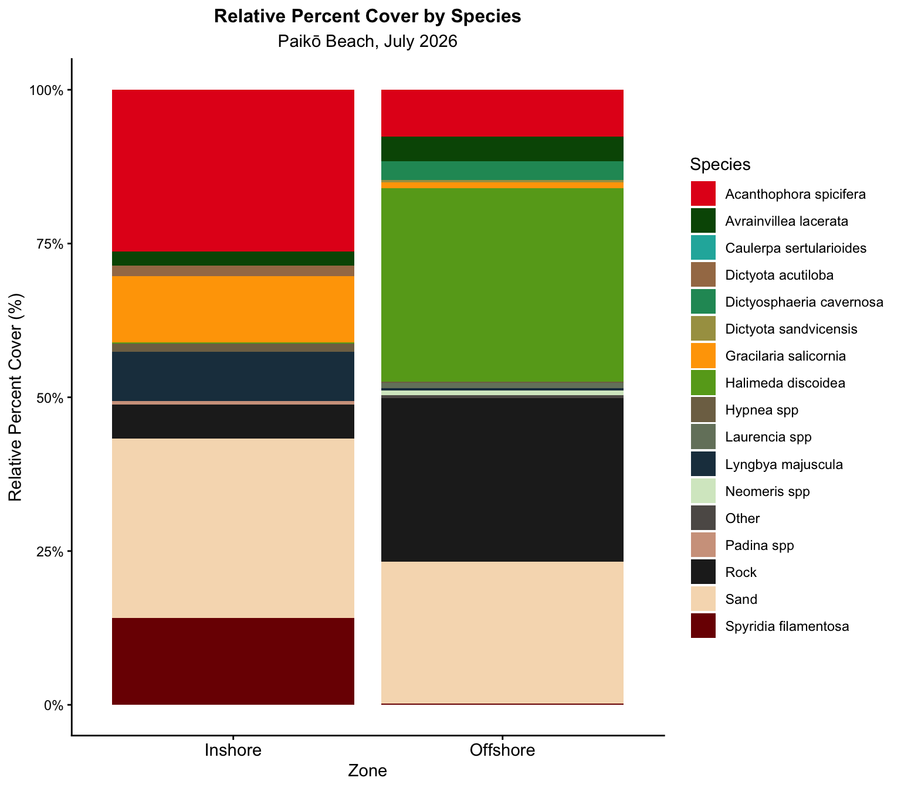
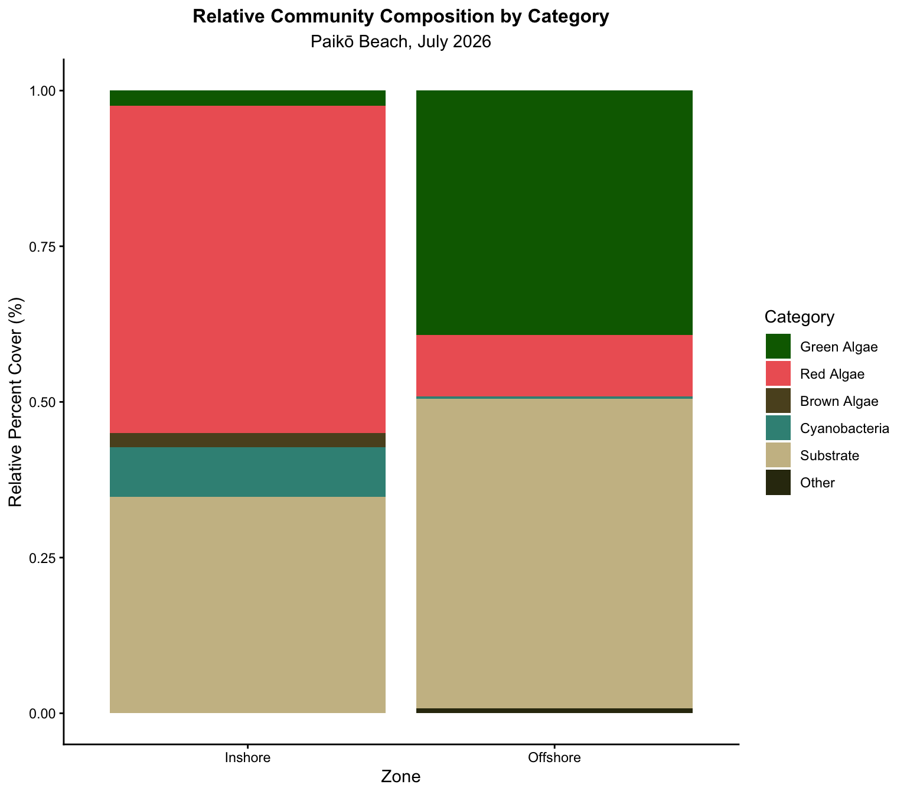
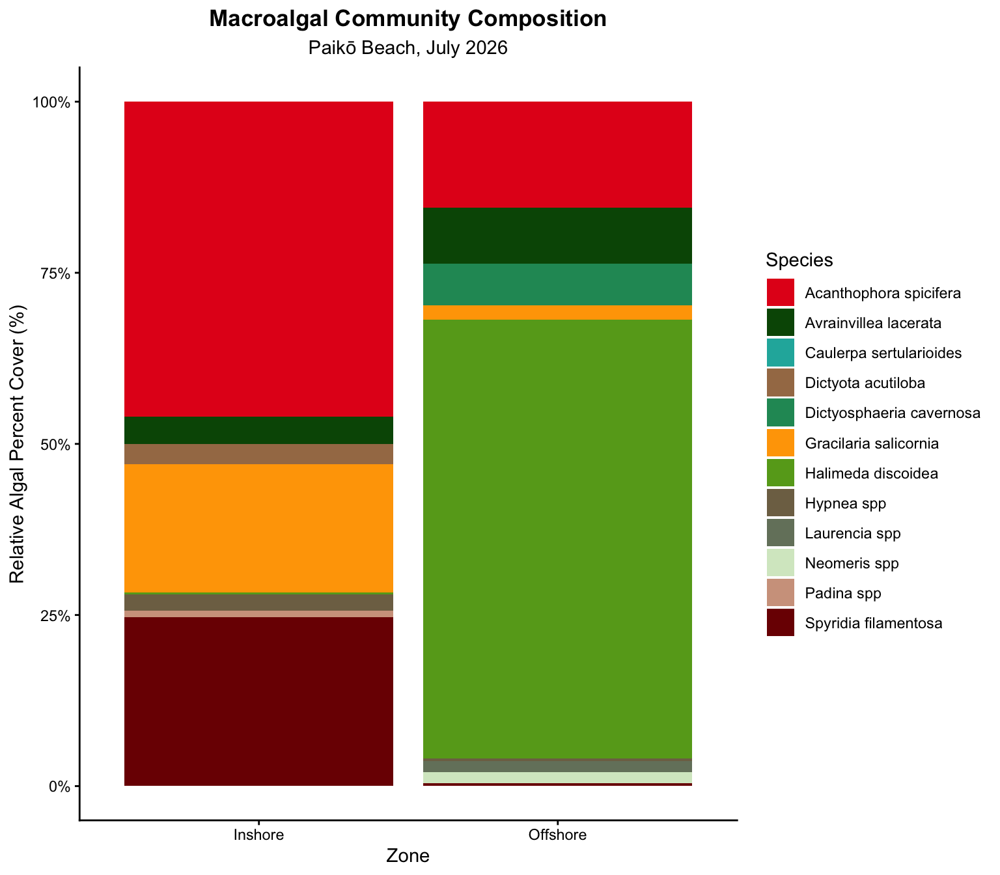
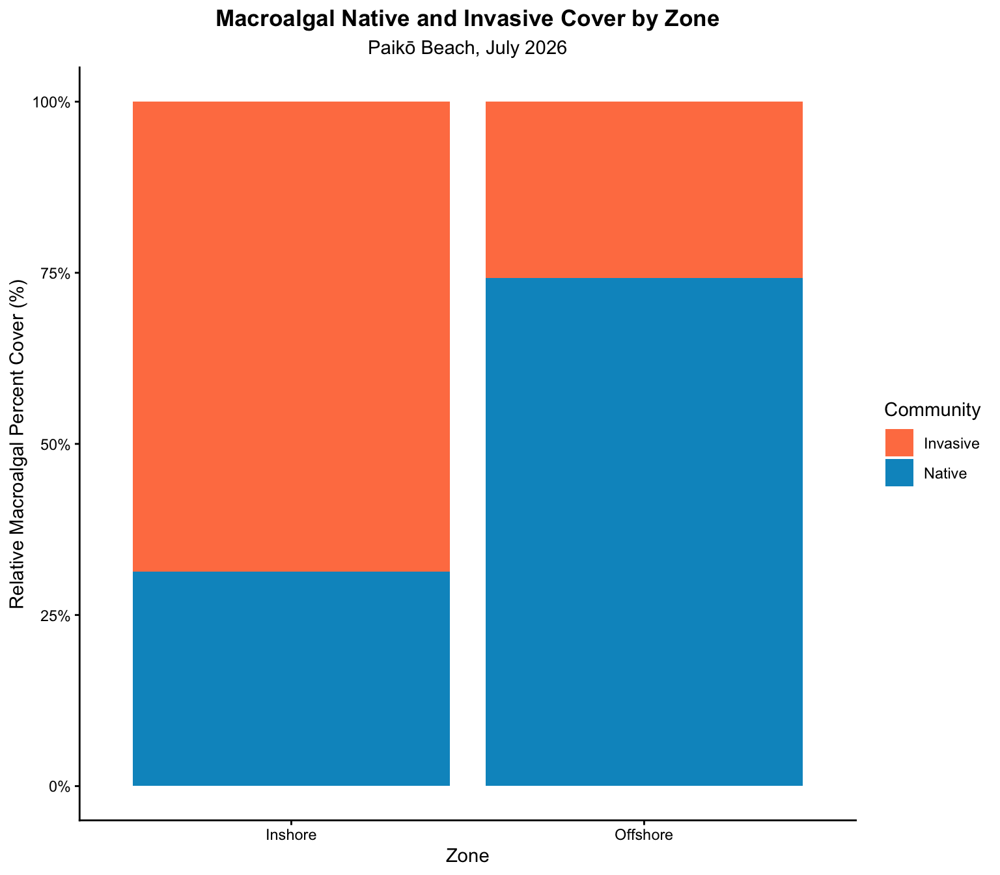
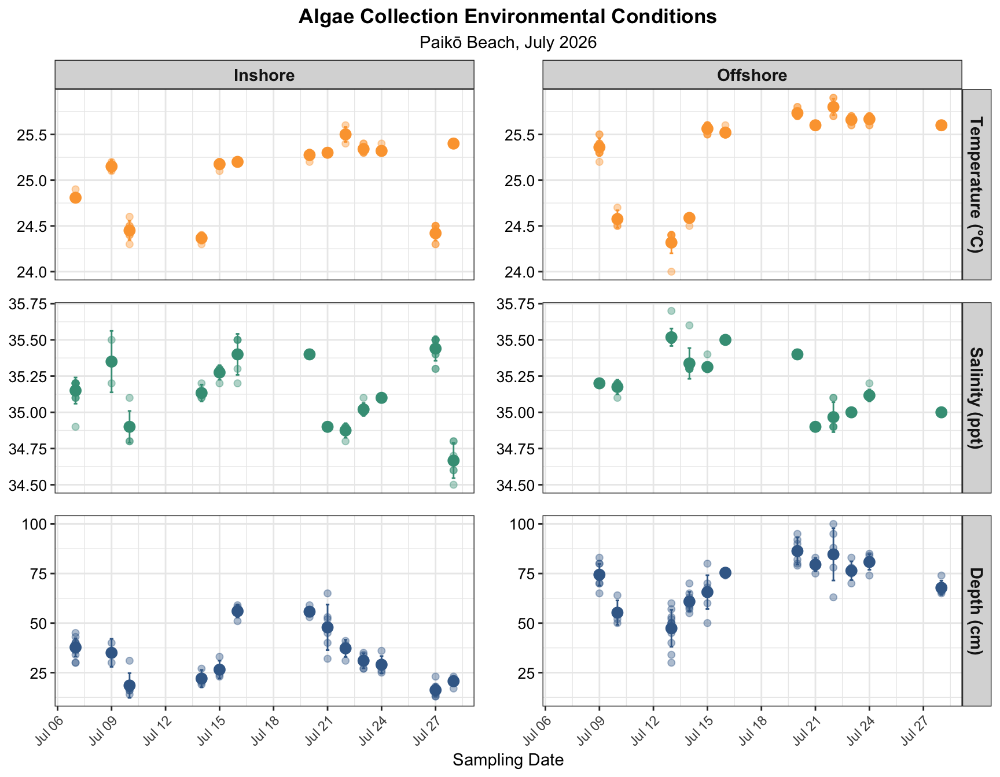
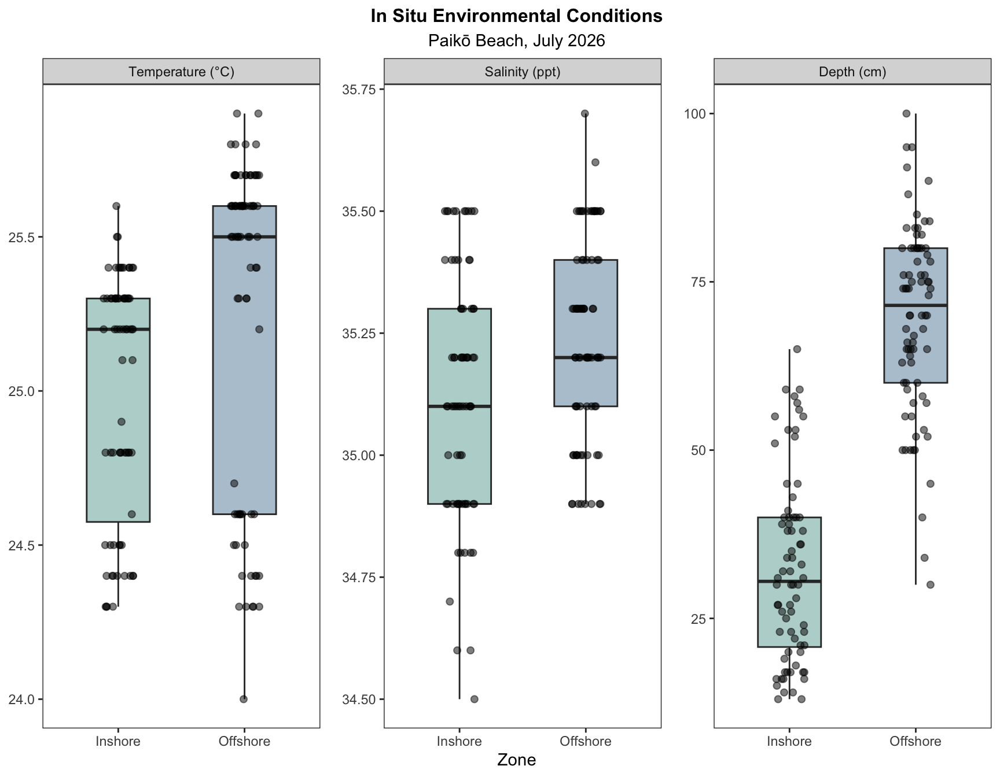

library(tidyverse)
library(here)
library(ggplot2)
library(cmocean) # colors
library(forcats)
library(stringr)
library(sf)
library(ggthemes)
library(janitor) # clean up data package
library(ggmap) # to make map of sites
library(ggspatial) # scale bars and arrows
library(ggrepel) # site labels to maps, for repelling labels
library(lubridate) # fix dates
library(fishualize) # color paletteRespo Algae Environmental Collection Data
HOBO Temp/Lux Pendant Code
Created by: Haley Poppinga
Introduction to code/script
Location: Paikō Beach in Maunalua Bay
Description: Throughout the month of July, 2026, samples of macroalgae was collected for respirometry experiments. In situ environmental data at the the exact location of each sample collection at Paikō Beach in Maunalua Bay was taken. A 0.5 x 0.5 m quadrat was placed at random meter intervals along 50 m transects inshore and offshore to the right and left of each transect. We counted 25 points per quadrat placement and only one thing under each point (macroalgae, substrate, other).
Metrics Measured:
- Salinity (ppt)
- Temperature (˚C)
- Depth (cm)
- Coordinates (decimal degrees)
- Samples.
Load Libraries
Community Composition Data
Read in Data
CommunityCompSummer<-read_csv(here("Data","Algae_Surveys_summer.csv")) # belt transect survey data
glimpse(CommunityCompSummer)Rows: 41
Columns: 23
$ date <date> 2026-06-26, 2026-06-26, 2026-06-26, 2026-06-26, 2026-…
$ transect_number <dbl> 1, 1, 1, 1, 1, 1, 1, 1, 1, 1, 1, 2, 2, 2, 2, 2, 2, 2, …
$ transect_meter <dbl> 3, 5, 8, 15, 22, 27, 33, 39, 42, 45, 50, 2, 6, 12, 16,…
$ side <chr> "right", "right", "right", "left", "right", "left", "l…
$ zone <chr> "inshore", "inshore", "inshore", "inshore", "inshore",…
$ av <dbl> 0, 0, 1, 0, 0, 0, 0, 0, 0, 0, 0, 1, 0, 2, 0, 0, 0, 2, …
$ as <dbl> 14, 9, 7, 8, 4, 10, 6, 2, 7, 6, 4, 2, 12, 4, 10, 7, 1,…
$ gs <dbl> 3, 5, 0, 1, 1, 1, 2, 0, 5, 5, 4, 0, 0, 4, 1, 5, 3, 4, …
$ cs <dbl> 0, 0, 0, 0, 0, 0, 0, 0, 0, 0, 0, 0, 0, 0, 0, 0, 0, 0, …
$ sf <dbl> 3, 1, 8, 4, 3, 4, 1, 3, 1, 2, 11, 12, 1, 1, 2, 3, 5, 3…
$ da <dbl> 0, 0, 2, 0, 0, 0, 0, 0, 0, 1, 0, 0, 3, 1, 0, 1, 0, 0, …
$ lyng <dbl> 1, 1, 0, 1, 2, 0, 1, 0, 1, 0, 1, 1, 2, 3, 3, 3, 5, 1, …
$ pad <dbl> 0, 0, 0, 0, 0, 0, 0, 0, 0, 0, 0, 0, 0, 0, 1, 0, 0, 1, …
$ hd <dbl> 0, 0, 0, 0, 0, 1, 0, 0, 0, 0, 0, 0, 0, 0, 0, 0, 0, 0, …
$ hyp <dbl> 0, 0, 0, 1, 0, 2, 0, 0, 0, 0, 0, 2, 0, 0, 0, 0, 0, 0, …
$ dc <dbl> 0, 0, 0, 0, 0, 0, 0, 0, 0, 0, 0, 0, 0, 0, 0, 0, 0, 0, …
$ ds <dbl> 0, 0, 0, 0, 0, 0, 0, 0, 0, 0, 0, 0, 0, 0, 0, 0, 0, 0, …
$ lau <dbl> 0, 0, 0, 0, 0, 0, 0, 0, 0, 0, 0, 0, 0, 0, 0, 0, 0, 0, …
$ neo <dbl> 0, 0, 0, 0, 0, 0, 0, 0, 0, 0, 0, 0, 0, 0, 0, 0, 0, 0, …
$ other <dbl> 0, 0, 0, 0, 0, 0, 0, 0, 0, 0, 0, 0, 0, 0, 0, 0, 0, 0, …
$ sand <dbl> 4, 9, 6, 8, 15, 7, 15, 17, 10, 11, 5, 6, 4, 7, 5, 4, 8…
$ rock <dbl> 0, 0, 1, 2, 0, 0, 0, 3, 1, 0, 1, 0, 3, 3, 3, 2, 3, 0, …
$ notes <chr> "lots of fly-fishermen", NA, "SF intertwined with a lo…Species_Names<-read_csv(here("Data","Species_Names.csv")) # species names listedClean the Data
Percent Cover Calculation:
- Percent cover = (count/total points) x100
- Total possible points: 25 quadrat points
- One thing counted under one point
Percent cover = species count/25 x 100
CommunityCompSummer_long<-CommunityCompSummer |>
pivot_longer(cols = av:rock, # all columns for species/substrate
names_to = "species", # add a new column with the species
values_to = "count") |> # add a new column with the counts associated
# Calculate percent cover:
mutate(percent_cover = (count / 25)*100) %>% # absolute percent cover for each species in a quadrat
mutate(percent_cover = as.numeric(percent_cover)) # make sure it is numeric
# join data with species names csv
CommunityCompSummer_long<-CommunityCompSummer_long |>
left_join(Species_Names, by = "species")View the edited dataset:
glimpse(CommunityCompSummer_long)Rows: 697
Columns: 12
$ date <date> 2026-06-26, 2026-06-26, 2026-06-26, 2026-06-26, 2026-…
$ transect_number <dbl> 1, 1, 1, 1, 1, 1, 1, 1, 1, 1, 1, 1, 1, 1, 1, 1, 1, 1, …
$ transect_meter <dbl> 3, 3, 3, 3, 3, 3, 3, 3, 3, 3, 3, 3, 3, 3, 3, 3, 3, 5, …
$ side <chr> "right", "right", "right", "right", "right", "right", …
$ zone <chr> "inshore", "inshore", "inshore", "inshore", "inshore",…
$ notes <chr> "lots of fly-fishermen", "lots of fly-fishermen", "lot…
$ species <chr> "av", "as", "gs", "cs", "sf", "da", "lyng", "pad", "hd…
$ count <dbl> 0, 14, 3, 0, 3, 0, 1, 0, 0, 0, 0, 0, 0, 0, 0, 4, 0, 0,…
$ percent_cover <dbl> 0, 56, 12, 0, 12, 0, 4, 0, 0, 0, 0, 0, 0, 0, 0, 16, 0,…
$ species_id <chr> "AV", "AS", "GS", "CS", "SF", "DA", "LYNG", "PAD", "HD…
$ species_name <chr> "Avrainvillea lacerata", "Acanthophora spicifera", "Gr…
$ full_species <chr> "avrainvillea_lacerata", "acanthophora_spicifera", "gr…Assign species into categories:
invasive_algae<-c("avrainvillea_lacerata",
"acanthophora_spicifera",
"gracilaria_salicornia")
native_algae<-c("caulerpa_sertularioides", "dictyosphaeria_cavernosa", "dictyota_acutiloba", "dictyota_sandvicensis", "galaxaura_rugosa", "halimeda_discoidea", "hypnea_spp", "laurencia_spp", "neomeris_spp", "padina_spp", "spyridia_filamentosa")
# Need to verify these are organized correctly in future
red_algae <- c("acanthophora_spicifera", "galaxaura_rugosa", "gracilaria_salicornia", "hypnea_spp", "laurencia_spp", "spyridia_filamentosa")
green_algae <- c("avrainvillea_lacerata", "caulerpa_sertularioides", "dictyosphaeria_cavernosa", "halimeda_discoidea", "neomeris_spp")
brown_algae <- c("dictyota_acutiloba", "dictyota_sandvicensis", "padina_spp")
cyanobacteria <- c("lyngbya_majuscula")
other<-c("other")
substrate<-c("rock", "sand")Make new columns fpr categories and community type:
CommunityComp_categories<-CommunityCompSummer_long %>% # create a new column: the species from the species column is in a certain vector (defined above)
mutate(category = case_when(full_species %in% red_algae ~ "Red Algae",
full_species %in% green_algae ~ "Green Algae",
full_species %in% brown_algae ~ "Brown Algae",
full_species %in% cyanobacteria ~ "Cyanobacteria",
full_species %in% substrate ~ "Substrate",
TRUE ~ "Other")) %>% # everything else instead of NAs
mutate(community = case_when(full_species %in% invasive_algae ~ "Invasive",
full_species %in% native_algae ~ "Native"))
# New cleaned csv to use in the Shiny App in final project repo
#write.csv(MMdata_categories, here("Data", "MMdata_3years_clean.csv"))Make a species palette
# set up species colors
species_palette <- c(av = "#045404", # green algae division, #033500
hd = "#66A61E", # green
cs = "#20B2AA", # green
dc = "#239665", # green
as = "#E41A1C", # red
gs = "#FFA500", # red
sf = "#7C0A02", # red
da = "#A57A54", # brown
ds = "#A89F51", # brown
hyp = "#7F7053",
pad = "#D1A28C",
gg = "#8E484B",
lau = "#75816B",
other = "#5E5956",
lyng = "#1F3B4D",
neo = "#D6E9CA",
rock = "#232323",
sand = "#F6DCBD") View the edited dataset:
glimpse(CommunityComp_categories)Rows: 697
Columns: 14
$ date <date> 2026-06-26, 2026-06-26, 2026-06-26, 2026-06-26, 2026-…
$ transect_number <dbl> 1, 1, 1, 1, 1, 1, 1, 1, 1, 1, 1, 1, 1, 1, 1, 1, 1, 1, …
$ transect_meter <dbl> 3, 3, 3, 3, 3, 3, 3, 3, 3, 3, 3, 3, 3, 3, 3, 3, 3, 5, …
$ side <chr> "right", "right", "right", "right", "right", "right", …
$ zone <chr> "inshore", "inshore", "inshore", "inshore", "inshore",…
$ notes <chr> "lots of fly-fishermen", "lots of fly-fishermen", "lot…
$ species <chr> "av", "as", "gs", "cs", "sf", "da", "lyng", "pad", "hd…
$ count <dbl> 0, 14, 3, 0, 3, 0, 1, 0, 0, 0, 0, 0, 0, 0, 0, 4, 0, 0,…
$ percent_cover <dbl> 0, 56, 12, 0, 12, 0, 4, 0, 0, 0, 0, 0, 0, 0, 0, 16, 0,…
$ species_id <chr> "AV", "AS", "GS", "CS", "SF", "DA", "LYNG", "PAD", "HD…
$ species_name <chr> "Avrainvillea lacerata", "Acanthophora spicifera", "Gr…
$ full_species <chr> "avrainvillea_lacerata", "acanthophora_spicifera", "gr…
$ category <chr> "Green Algae", "Red Algae", "Red Algae", "Green Algae"…
$ community <chr> "Invasive", "Invasive", "Invasive", "Native", "Native"…Make a summary table of mean percent cover calculations
# summarize percent cover by species and zone
PercentCover_table<- CommunityCompSummer_long |>
filter(!is.na(date),zone %in% c("inshore", "offshore")) |>
group_by(zone, species, species_name) |>
summarise(mean_cover = mean(percent_cover, na.rm = TRUE),
sd_cover = sd(percent_cover, na.rm = TRUE),
n = sum(!is.na(percent_cover)),.groups = "drop") |>
mutate(mean_cover = round(mean_cover, 2),
sd_cover = round(sd_cover, 2)) |>
arrange(zone, desc(mean_cover))
PercentCover_table# A tibble: 34 × 6
zone species species_name mean_cover sd_cover n
<chr> <chr> <chr> <dbl> <dbl> <int>
1 inshore sand Sand 29.1 17.3 21
2 inshore as Acanthophora spicifera 26.3 13.8 21
3 inshore sf Spyridia filamentosa 14.1 12.5 21
4 inshore gs Gracilaria salicornia 10.7 7.73 21
5 inshore lyng Lyngbya majuscula 8 7.69 21
6 inshore rock Rock 5.52 6.51 21
7 inshore av Avrainvillea lacerata 2.29 5.6 21
8 inshore da Dictyota acutiloba 1.71 3.24 21
9 inshore hyp Hypnea spp 1.33 2.63 21
10 inshore pad Padina spp 0.57 1.43 21
# ℹ 24 more rowsRelative Percent Cover by Species
# summarize counts by zone: calculate relative cover totals
CommunityCompSummer_species <- CommunityCompSummer_long %>%
group_by(zone, species_name, species) |>
summarise(total_count = sum(count, na.rm = TRUE), .groups = "drop") # adds counts for each species across all quadrats within a zone
# match species codes to scientific names
species_labels <- setNames(Species_Names$species_name, Species_Names$species)
# relative abundance by species
CommunityComp_July2026 <- ggplot(CommunityCompSummer_species,
aes(x = zone, y = total_count, fill = species)) +
geom_col(position = "fill") + # makes stacked bar add to 100 using each specie's total count, divide by sum of all counts
# relative cover of species A = total count of species A/total counts of all species/substrate
scale_fill_manual(values = species_palette, # use special colors
labels = function(x) coalesce(unname(species_labels[x]), x)) + #legend labels species names
scale_y_continuous(labels = scales::label_percent()) + # percent labels
scale_x_discrete(labels = c("inshore" = "Inshore", "offshore" = "Offshore")) + # capitalize zones
labs(x = "Zone",y = "Relative Percent Cover (%)", fill = "Species",
title = "Relative Percent Cover by Species",
subtitle = "Paikō Beach, July 2026") +
theme_classic() +
theme(panel.grid = element_blank(),
plot.title = element_text(face = "bold", size = 12, hjust = 0.5),
axis.text.x = element_text(size = 11),
plot.subtitle = element_text(size = 11, hjust = 0.5))
CommunityComp_July2026
#ggsave(here("Output", "EnviroParameters","CommunityComp_July2026.jpg"))Relative Community Composition by Category
# change category order
CommunityComp_categories$category <- factor(CommunityComp_categories$category,
levels=c("Green Algae", "Red Algae",
"Brown Algae", "Cyanobacteria",
"Substrate", "Other" ))
# summarize counts by category/zone
CommunityComp_categories_summary <- CommunityComp_categories |>
filter(!is.na(category)) |> # filter categories
group_by(zone, category) |>
summarise(total_count = sum(count, na.rm = TRUE), .groups = "drop")
# Make the Relative Abundance Plot by category
CategoryCommunityComp_July2026<-ggplot(CommunityComp_categories_summary,
aes(x= zone, y= total_count, fill= category)) +
geom_col(position = "fill") + # divide by sum of all counts
scale_x_discrete(labels = c("inshore" = "Inshore", "offshore" = "Offshore")) +
scale_fill_manual(values = c("Red Algae" = "indianred2", # specify fill colors for each category
"Green Algae" = "#096700",
"Brown Algae" = "#5C4F25",
"Cyanobacteria" = "#3a9085", "Substrate" = "#CBBD93",
"Other" = "#333311")) +
scale_color_manual(values = c("Red Algae" = "indianred2", # specify line colors for each category (same as fill)
"Green Algae" = "#096700", "Brown Algae" = "#5C4F25",
"Cyanobacteria" = "#3a9085", "Substrate" = "#CBBD93",
"Other" = "#333311")) +
theme_classic() + # theme
theme(axis.text.x = element_text(vjust = 1, hjust = 0.5)) + # angle of the x axis labels
labs(x = "Zone", # labels
y="Relative Percent Cover (%)", fill = "Category",
title = "Relative Community Composition by Category",
subtitle = "Paikō Beach, July 2026") +
guides(color = "none") + # keep only legend for fill since fill and color are the same
theme(panel.grid = element_blank(),
plot.title = element_text(face = "bold", size = 12, hjust = 0.5),
plot.subtitle = element_text(size = 11, hjust = 0.5),
strip.text = element_text(size = 12)) # making labels bigger
CategoryCommunityComp_July2026
ggsave(here("Output", "EnviroParameters", "CategoryCommunityComp_July2026.jpg"))Relative Community Composition for Macroalgae Only
# select only the algal categories
CommunityComp_algae <- CommunityComp_categories |>
filter(category %in% c("Green Algae", "Red Algae", "Brown Algae"))
# summarize algae counts by species/ zone
CommunityComp_algae_species <- CommunityComp_algae |>
group_by(zone, species) |>
summarise(total_count = sum(count, na.rm = TRUE),.groups = "drop")
# make a plot relative algal composition
MacroalgaeCommunityComp_July2026 <- ggplot(CommunityComp_algae_species,
aes(x = zone, y = total_count, fill = species)) +
geom_col(position = "fill") + # divide by sum of all counts
scale_fill_manual(values = species_palette,
labels = function(x) coalesce(unname(species_labels[x]), x)) +
scale_y_continuous(labels = scales::label_percent()) +
scale_x_discrete(labels = c("inshore" = "Inshore", "offshore" = "Offshore")) +
labs(x = "Zone", y = "Relative Algal Percent Cover (%)",
fill = "Species", title = "Macroalgal Community Composition",
subtitle = "Paikō Beach, July 2026") +
theme_classic() +
theme(panel.grid = element_blank(),
plot.title = element_text(face = "bold", hjust = 0.5),
plot.subtitle = element_text(size = 11, hjust = 0.5))
MacroalgaeCommunityComp_July2026
#ggsave(here("Output", "EnviroParameters", "MacroalgaeCommunityComp_July2026.jpg"))Relative Native and Invasive Composition
# filter for native and invasive algae
CommunityComp_status <- CommunityComp_algae |>
filter(community %in% c("Native", "Invasive"))
# summarize counts by zone and community
AlgalStatus_summary <- CommunityComp_status |>
group_by(zone, community) |> # Relative invasive cover = invasive algal counts/invasive + native algal counts x100
summarise(total_count = sum(count, na.rm = TRUE),.groups = "drop") # absolute percent cover
# plot
AlgalStatus_July2026<-ggplot(AlgalStatus_summary,
aes(x = zone, y = total_count, fill = community)) +
geom_col(position = "fill") +# divide by sum of all native/invasive counts
scale_y_continuous(labels = scales::label_percent()) +
scale_fill_manual(values = c("Native" = "#0096C7","Invasive" = "#FF7F50")) +
scale_x_discrete(labels = c("inshore" = "Inshore", "offshore" = "Offshore")) +
labs(x = "Zone", y = "Relative Macroalgal Percent Cover (%)",
fill = "Community", title = "Macroalgal Native and Invasive Cover by Zone",
subtitle = "Paikō Beach, July 2026") +
theme_classic()+
theme(panel.grid = element_blank(),
plot.title = element_text(face = "bold", hjust = 0.5),
plot.subtitle = element_text(size = 11, hjust = 0.5))
AlgalStatus_July2026
#ggsave(here("Output", "EnviroParameters", "AlgalStatus_July2026.jpg"))In Situ Algae Collection Environmental Data
Read in Data
CollectionSummer<-read_csv(here("Data","Algae_Collection_summer.csv")) # in situ collection data
glimpse(CollectionSummer)Rows: 207
Columns: 14
$ date <date> 2026-07-07, 2026-07-07, 2026-07-07, 2026-07-07, 2026-…
$ time <time> 06:19:00, 06:21:00, 06:25:00, 06:27:00, 06:29:00, 06:…
$ species_full <chr> "dictyota_acutiloba", "halimeda_discoidea", "avrainvil…
$ species <chr> "DA", "HD", "XAV", "AS", "GS", "HD", "DA", "SF", "AS",…
$ species_number <chr> "01", "01", "01", "01", "01", "02", "02", "01", "02", …
$ algae_id <chr> "DA01", "HD01", "XAV01", "AS01", "GS01", "HD02", "DA02…
$ waypoint_number <chr> "0015", "0016", "0017", "0018", "0019", "0020", "0021"…
$ zone <chr> "inshore", "inshore", "inshore", "inshore", "inshore",…
$ temp_c <dbl> 24.8, 24.8, 24.8, 24.8, 24.8, 24.8, 24.8, 24.8, 24.8, …
$ salinity_ppt <dbl> 34.9, 35.1, 35.1, 35.1, 35.2, 35.2, 35.2, 35.2, 35.2, …
$ depth_cm <dbl> 34, 40, 36, 30, 30, 38, 45, 40, 39, 38, 40, 43, 70, 74…
$ lat_dd <dbl> 21.28158, 21.28159, 21.28164, 21.28165, 21.28166, 21.2…
$ long_dd <dbl> -157.7322, -157.7321, -157.7320, -157.7320, -157.7320,…
$ notes <chr> NA, NA, "lots of stuff on it, REMOVED (DID NOT RUN)", …Clean the Data
Cleaning up Coordinates
# CLEAN THE DATA
CollectionSummer <- CollectionSummer |>
#filter(!is.na(date)) # valid algae collections have a date
filter(if_any(everything(), ~ !is.na(.x))) # removes weird NAs that showed up at end of dataset
#filter(year(date) == 2026,
# month(date) == 07) #|> # filter for July 2026
#mutate(time_hours = as.numeric(time) /3600, # converts time to hours to plot continious
#sampling_date = factor(format(date, "%b %d")))
# pivot longer
Algae_enviro<-CollectionSummer |>
distinct(date, time, waypoint_number, zone,
temp_c, salinity_ppt, depth_cm) |> # separate duplicate observations for same waypoint (there shouldnt be any though)
pivot_longer(cols = c(temp_c, salinity_ppt, depth_cm),
names_to = "parameter",
values_to = "value") |>
mutate(parameter = factor(parameter, levels =
c("temp_c", "salinity_ppt", "depth_cm"),
labels = c("Temperature (°C)",
"Salinity (ppt)", "Depth (cm)")))
# calculate mean and SD
Algae_enviro_summary <- Algae_enviro |>
group_by(date, zone, parameter) |>
summarise(mean_param = mean(value, na.rm = TRUE),
sd_param = sd(value, na.rm = TRUE),
n = sum(!is.na(value)), .groups = "drop")View the edited dataset
glimpse(Algae_enviro)Rows: 450
Columns: 6
$ date <date> 2026-07-07, 2026-07-07, 2026-07-07, 2026-07-07, 2026-…
$ time <time> 06:19:00, 06:19:00, 06:19:00, 06:21:00, 06:21:00, 06:…
$ waypoint_number <chr> "0015", "0015", "0015", "0016", "0016", "0016", "0017"…
$ zone <chr> "inshore", "inshore", "inshore", "inshore", "inshore",…
$ parameter <fct> Temperature (°C), Salinity (ppt), Depth (cm), Temperat…
$ value <dbl> 24.8, 34.9, 34.0, 24.8, 35.1, 40.0, 24.8, 35.1, 36.0, …glimpse(Algae_enviro_summary)Rows: 75
Columns: 6
$ date <date> 2026-07-07, 2026-07-07, 2026-07-07, 2026-07-09, 2026-07-09…
$ zone <chr> "inshore", "inshore", "inshore", "inshore", "inshore", "ins…
$ parameter <fct> Temperature (°C), Salinity (ppt), Depth (cm), Temperature (…
$ mean_param <dbl> 24.80833, 35.15000, 37.75000, 25.15000, 35.35000, 35.00000,…
$ sd_param <dbl> 0.02886751, 0.09045340, 4.61469983, 0.07071068, 0.21213203,…
$ n <int> 12, 12, 12, 2, 2, 2, 10, 10, 10, 6, 6, 6, 4, 4, 4, 11, 11, …Nice color palette for environmental data
enviro_palette <- c("Temperature (°C)" = cmocean("thermal")(100)[80], # from cmocean palette
"Salinity (ppt)" = cmocean("haline")(100)[55],
"Depth (cm)" = cmocean("deep")(100)[65])Collection Parameter Plot
Plot the environmental data during collections
# Plot in situ environmental conditions
AlgaeEnviro_July2026 <- ggplot() +
geom_point(data = Algae_enviro,
aes(x = date, y = value, color = parameter),
#position = position_jitter(width = 0.1, height = 0),
alpha = 0.4, size = 1.8) + #all individual measurements in back
geom_errorbar(data = Algae_enviro_summary, # add error
aes(x = date, ymin = mean_param - sd_param,
ymax = mean_param + sd_param,
color = parameter), width = 0.2) +
geom_point(data = Algae_enviro_summary, # means
aes(x = date, y = mean_param, color = parameter), size = 3) +
scale_color_manual(values = enviro_palette) +
#facet_wrap(~parameter, # facet by temp, sal, and depth
#ncol = 1, scales = "free_y", labeller = as_labeller(c(
# temp_c = "Temperature (°C)",
#salinity_ppt = "Salinity (ppt)",
#depth_cm = "Depth (cm)"))) +
facet_grid(parameter ~ zone, scales = "free_y", # facet by inshore/ offshore
axes = "all_y", axis.labels = "all_y", # add labels to offshore plots too
labeller = labeller(zone = c(inshore = "Inshore",
offshore = "Offshore"))) + #capitalize
#labeller = labeller(parameter = c(
# temp_c = "Temperature (°C)",
#salinity_ppt = "Salinity (ppt)",
#depth_cm = "Depth (cm)"))) +
#scale_x_continuous(breaks = seq(6, 13, by = 1),
# labels = function(x) sprintf("%02d:00", x)) + # 24 hour time
scale_x_date(date_breaks = "3 days", date_labels = "%b %d") +
#scale_x_discrete(drop = FALSE) +
labs(x = "Sampling Date", y = NULL, #color = "Parameter",
title = "Algae Collection Environmental Conditions",
subtitle = "Paikō Beach, July 2026") +
theme_bw() +
theme(#strip.background = element_rect(fill = "white", color = "black"),
strip.text = element_text(face = "bold", size = 11),
axis.text.x = element_text(angle = 45, hjust = 1),
axis.text.y = element_text(size = 10, color = "black"),
axis.title.x = element_text(size = 11),
plot.title = element_text(face = "bold", hjust = 0.5),
panel.spacing = unit(0.5, "cm"),
legend.position = "none",
plot.subtitle = element_text(hjust = 0.5))
AlgaeEnviro_July2026
#ggsave(here("Output", "EnviroParameters", "AlgaeEnviro_July2026.jpg"))Environmental Conditions by Zone
AlgaeEnviro_zone_July2026 <- ggplot(Algae_enviro,
aes(x = zone, y = value, fill = zone)) +
geom_boxplot(width = 0.5, alpha = 0.4, outlier.shape = NA ) +
geom_jitter(width = 0.12,height = 0, size = 1.8, alpha = 0.5) +
facet_wrap(~parameter,ncol = 3, scales = "free_y") +
scale_fill_manual(values = c("inshore" = "#3a9085",
"offshore" = "#31688e")) +
scale_x_discrete(labels = c("inshore" = "Inshore",
"offshore" = "Offshore")) +
labs(x = "Zone", y = NULL, title = "In Situ Environmental Conditions",
subtitle = "Paikō Beach, July 2026") +
theme_bw() +
theme(legend.position = "none",
panel.grid = element_blank(),
plot.title = element_text(face = "bold", size = 12, hjust = 0.5),
panel.spacing = unit(0.5, "cm"),
plot.subtitle = element_text(size = 11, hjust = 0.5))
AlgaeEnviro_zone_July2026
ggsave(here("Output", "EnviroParameters", "AlgaeEnviro_zone_July2026.jpg"))Calculate Means
CollectionSummer_means<-CollectionSummer |>
# Pivot Longer
pivot_longer(cols = c(temp_c, salinity_ppt, depth_cm), # parameters
names_to = "Variable", # columns for those
values_to = "Value") %>% # measurement and all metadata
# Summarise Means and Variances
group_by(zone, Variable) %>% # group by inshore/offshore and variables
summarise(parameter_mean = mean(Value, na.rm = TRUE)) # get mean
CollectionSummer_means # A tibble: 6 × 3
# Groups: zone [2]
zone Variable parameter_mean
<chr> <chr> <dbl>
1 inshore depth_cm 32.4
2 inshore salinity_ppt 35.1
3 inshore temp_c 25.0
4 offshore depth_cm 69.6
5 offshore salinity_ppt 35.2
6 offshore temp_c 25.3Extra
# ggsave(here("Output", "plot_january2026.jpg"))
# To do before running code:
# Empty your environment before you start working
# Restart R
# .rs.restartR()
# remove whole list in environment
# rm(list = ls())